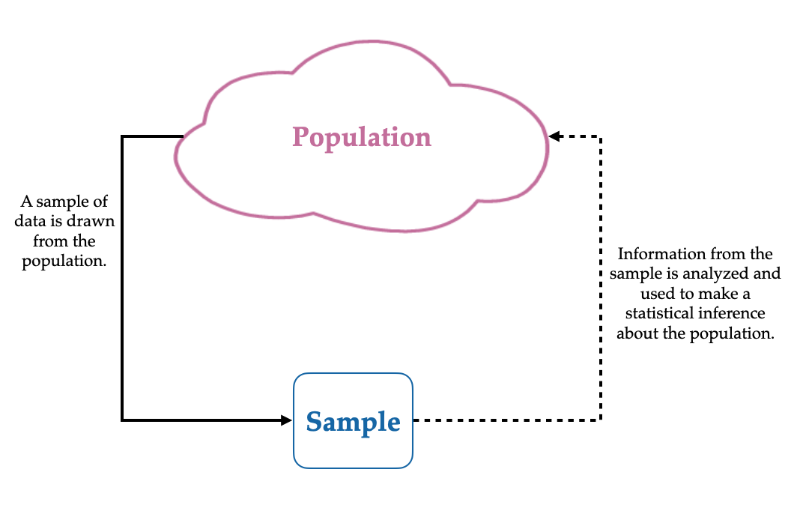
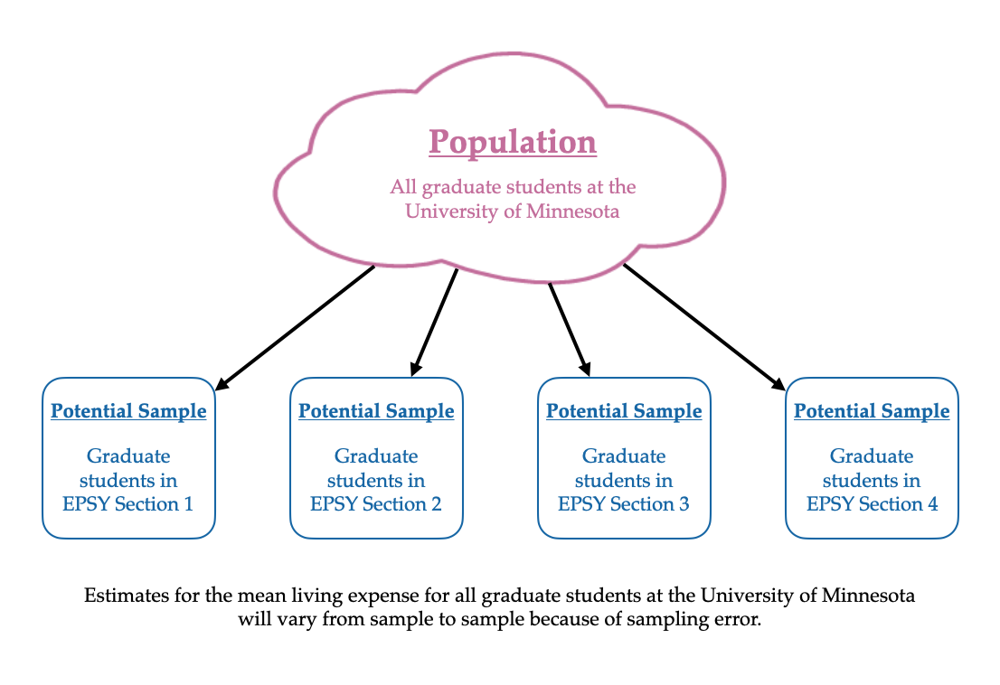

2 Data
The American Statistical Association defines statistics as, “the science of learning from data, and of measuring, controlling and communicating uncertainty” (American Statistical Association, 2023). The methods you learn throughout this textbook, and the EPSY 5261 course, will help you to learn from data and to measure, control, and communicate about uncertainty.
Consider the following data which constitute a random sample of 25 New York Times bestselling books. Take a minute to look familiarize yourself with these data.
These data have a tabular structure, that is, it is organized into rows and columns. In tabular data, the rows represent cases (also called units) and the columns represent attributes (also referred to as variables). It is important to identify what the cases and attributes are when you initially look at a new data set.
In these data, there are 25 cases, and each case is a NYT best selling book. That is, each row represents a different NYT best selling book. There are eight attributes in these data. Attributes are the information or characteristics that are collected for each of the cases. The attributes in these data are:
- The year the book was published,
- The title of the book,
- The author of the book,
- Whether the author identifies as a female (0 = no, 1 = yes),
- The total number of weeks the book was on the NYT Best Sellers list,
- The first week the book appeared on the NYT Best Sellers list,
- The book’s debut rank on the NYT Best Sellers list, and
- The book’s highest rank while it was on the NYT Best Sellers list.
Tabular data are required in order to carry out most analyses with computational tools, although not all data are tabular. For example, many websites store data in non-tabular forms such as XML or JSON. In this course, all the data you work with will be tabular.
2.1 Classifying Attributes
Our ultimate goal is often to analyze the data we have to learn from it. For example, in our NYT Best Seller data, we may be interested in the proportion of authors that identify as female. Or, we may want to. know how many weeks a book stays on the Best Sellers list. The type of analyses we can do, however, depend on the type of attributes we have.
We typically classify attributes as either categorical attributes or quantitative attributes. These classifications are based on the type of information (data) in the attribute. A categorical attribute has values that represent categorical (or qualitative) differences between the cases, whereas a quantitative attribute represents numerical (or quantitative) differences between cases. For example, in the NYT Best Seller data, title and author are categorical variables, whereas year, and total number of weeks the book was on the NYT Best Sellers list are quantitative attributes.
Typically attributes that have numerical values are quantitative, but not always. In our data, consider the attribute that indicates whether the author identifies as a female. Although the values in the data are numeric, these numbers actually represent different categories: 0 = no (not female) and 1 = yes (female). Therefore, this attribute is actually a categorical attribute, not a quantitative attribute.
One check of whether anattribute is actually quantitative is whether numeric computations, such as finding an average of the attribute, can be carried out and the result makes conceptual sense. For example, we cannot compute the mean author value (it is thus a categorical attribute). If we compute the mean of the female attribute we get a result, but it does not indicate anything about the gender identity of a NYT best selling author. The mean does not make conceptual sense and thus we classify female as a categorical attribute.
Your Turn
Classify the best_rank attribute (the book’s highest rank while it was on the NYT Best Sellers list) as either categorical or quantitative. Explain.
2.1.1 Further Classifications of Attributes
Nominal
Ordinal
Interval
Ratio
2.2 How Were the Data Generated?
Another question that has direct implications on the methods used in data analysis is: How were the data generated or collected? Were they collected from a survey? Were they mined from the web? Were they generated as part of an experimental study? Knowing the answer to these questions also is important for the degree to which we can draw conclusions from the analysis.
Understanding how the data were generated allows us to determine whether the data we have constitute a sample of cases or the entire population of cases we are interested in learning about. Importantly, whether you have a sample or the entire population depends on how you define the cases/observations you are interested in drawing conclusions about.
A population includes all cases/observations of interest, whereas a. sample includes a subset of cases from the population.
For example, consider a child psychologist who wants to draw conclusions about all students at a particular school in Minnesota. To do this, she collects data from every student in that school. Since her data includes every case (student) she is interest in drawing conclusions for, her data would be a population, Now consider a second child psychologist who is interested in drawing conclusions about all students in Minnesota. This psychologist also collects data from every student in the same school as the first psychologist. This second psychologist’s data would be considered a sample since the cases they included in their data are only a subset of the cases they want to draw conclusions about.
Your Turn
Is the New York Time best sellers data a population or a sample? Explain.
2.2.1 Drawing Conclusions from a Sample
In practice, we rarely have data collected from an entire population, but we still want to use the data we have in our sample to draw conclusions about that population. Drawing conclusions about an entire population when you only have data from a subset cases is what statisticians call statistical inference.

This can be a very tricky thing to do since the sample does not give us complete information about the population. As an example, consider if you wanted to figure out the average monthly living expenses for all graduate students at the University of Minnesota. To do this you collect data on the monthly living expenses for the students in your EPSY 5261 class and compute the average monthly living expense based on the data you collected and use that value as a guess for the average monthly living expenses for all graduate students at the University of Minnesota. (Note that the cases in your data (students in your EPSY 5261 class) are a subset of the population you want to draw conclusions about (all graduate students at the University of Minnesota) and thus are a sample.)
Summaries computed from the population are referred to as parameters and summaries computed from a sample are referred to as statistics.
In statistical inference the statistics we compute from a sample are estimates for the population parameters that we are interested in. The word “estimate” may have clued you in that the value of a statistic is generally not equal to the value of the parameter. In our example, the average monthly living expenses we computed based on your sample of cases is probably not the same as the average monthly living expenses for all graduate students at the University of Minnesota. This is because our sample only includes data for some (not all) of the cases.
We don’t expect the value of the statistic to be the same as that for the parameter we are trying to estimate, but a key question is: Is the value of the statistic a reasonable estimate of the parameter? The answer to this question can sometimes be difficult to answer. What do we mean by reasonable? In statistical analysis, there are a few ways that we consider reasonableness of an estimate. We will explore these below.
2.2.1.1 Sampling Error: Quantifying the Amount of Uncertainty in our Sample Estimate
One way we consider whether an answer is reasonable is how much uncertainty we have in the estimate from our sample. Imagine if you repeated the study, but this time, you collected data on the monthly living expenses in a different section of EPSY 5261. The average computed from these data would likely be different from the average you computed from your section of EPSY 5261, and therefore your guess for the average monthly living expenses for all graduate students at the University of Minnesota would be different. This is because you would have different cases in your sample.
When using a sample to infer about a population, our guesses or estimates vary depending on the cases in our sample. This means that when we make inferences there is always some degree of uncertainty in our estimates.
The idea that estimates from samples vary depending on the cases in your sample is well known and is referred to as sampling error. In carrying out statistical inference, we not only acknowledge that we have uncertainty in our guess from the sample data, but we also try and quantify how much uncertainty there is in that estimate. For example, do we think that the average monthly living expenses for all graduate students at the University of Minnesota is within a few dollars of our sample estimate? Or do we think that it is within a few hundred dollars of our sample estimate? By providing this estimate of the uncertainty, it lets other people know “how reasonable” our guess might be.

2.2.1.2 Sampling Bias: Does the Sample Represent the Population?
A second way we consider whether an answer is reasonable is to consider whether our sample of cases is representative of the population as a whole. In our example, we are asking the question of whether the students in your section of EPSY 5261 are representative of all graduate students at the University of Minnesota when it comes to living expenses. This is a really difficult question to answer, but generally (unless you have selected your sample randomly from the population), your sample is not representative. The key here is that the sampling method (how you chose your cases) matters!
When a sample is not randomly selected from the population we say that the sampling method is biased.
A biased sampling method leads to systematically wrong answers. For example, again say you were interested in determining the average monthly living expenses for all graduate students at the University of Minnesota. This time, your sampling method is to collect data about the monthly living expenses from all the graduate students who live in a particular apartment building in Downtown Minneapolis. Would these students’ living expenses be representative of all graduate students at the University of Minnesota?
Again, probably not. The living expenses in Downtown Minneapolis are different (generally higher) than the living expenses of students who live in Dinkytown or one of the suburbs. Because the cases in your sample all come from the same apartment building in Downtown Minneapolis, their average monthly living expense will be systematically higher than the average monthly living expenses for all graduate students at the University of Minnesota.
What about our original sampling method of collecting data from each of the graduate students in your EPSY 5261 section? While these students might live in different areas, and seem more representative, this sampling method is likely still biased. Even if we have a hard time identifying how, the estimate for the average monthly living expenses based on students in EPSY 5261 is likely systematically different than the average monthly living expenses for all graduate students at the University of Minnesota. (It may be systematically too low, or too high.)
The only sampling method that is guaranteed to be unbiased (and therefore representative) is to select your sample randomly from the population.
2.2.2 Random Sampling
There are many methods for randomly selecting a sample from the population. The simplest method that incorporates randomness into the sampling process is Simple Random Sampling. In simple random sampling each case in the population has an equal probability of being selected into the sample.1
In the discipline of statistics, there are words that we use that have very different meanings from their use in colloquial English. “Random” is one of those words. In our everyday language “random” might mean happenstance or unexpected. For example: It was so random that I saw Ferris Bueller at the 31 Flavors last night. In statistics, “random” does not mean happenstance at all. Random sampling is quite formal in ensuring that cases have a specified probability of being selected into the sample.
One of the most compelling and useful results in statistics is that a simple random sample is representative of the population, and moreover that even small samples that are selected with this method can be representative of very large populations. This is powerful!
But, it can sometimes be very difficult to draw a simple random sample in practice. For one thing, it requires that you have a list of all the cases in the population (called a sampling frame). This allows you to make sure that everyone in the population has the same probability of being selected. While it might be possible to obtain a list of all graduate students enrolled at the University of Minnesota, it is another thing to obtain a list of all people living in Minnesota. Or even a list of people living in Dinkytown. Depending on your population of interest you may not be able to get a simple random sample.2
Your Turn
What is the sampling method for the New York Time best sellers data. Based on this method, are the estimates of the population parameters we compute from these data going to be biased or unbiased?
2.3 Summary
Every time you encounter data, you should identify the cases and attributes in the data. Understanding the cases, especially in relation to the cases you want to draw conclusions about, helps you identify whether you have a sample, or the entire population. Classifying the attributes helps you think about the type of analysis you can undertake. If your data are a sample (rather than a population), you also need to ask how they were collected. Were they collected using randomness in the sampling method? Or is the sampling method used to collect the data biased?
2.4 References
American Statistical Association. (2023). ASA newsroom. Website. https://www.amstat.org/asa-newsroom
Technically the definition of a simple random sample is all potential samples of size n have the same probability of being selected, which implies that each case in the population has an equal probability of being selected into the sample. Conceptually, however, it is easier to think about the probability of each case rather than of the probability of groups of size n.↩︎
In this case there are other more complex methods of random sampling that you could use (e.g., stratified random sampling, cluster random sampling.↩︎